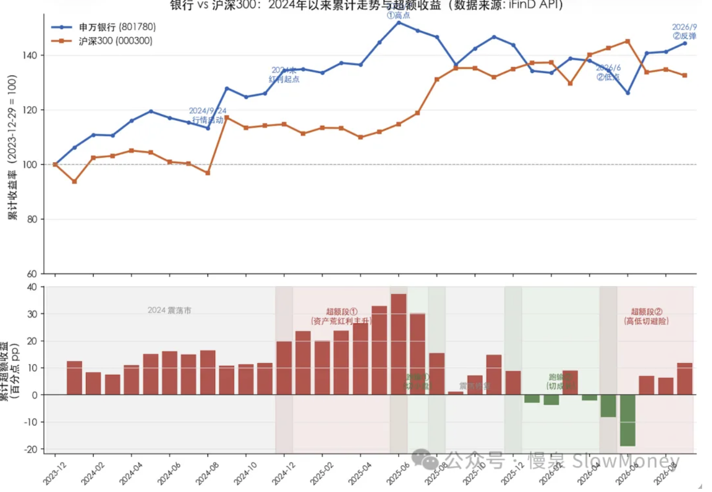
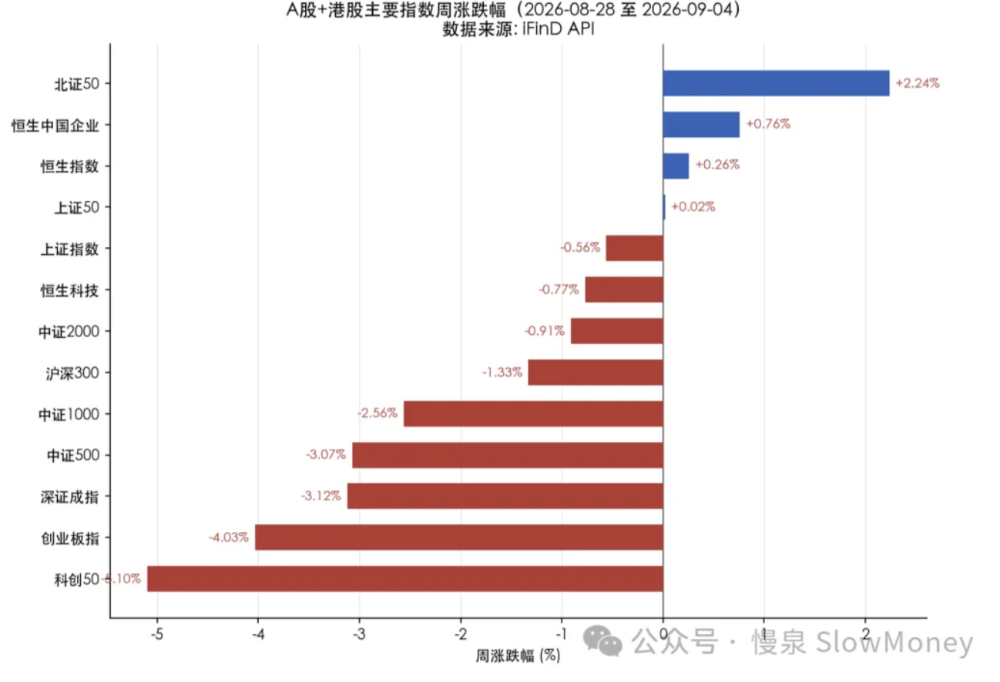
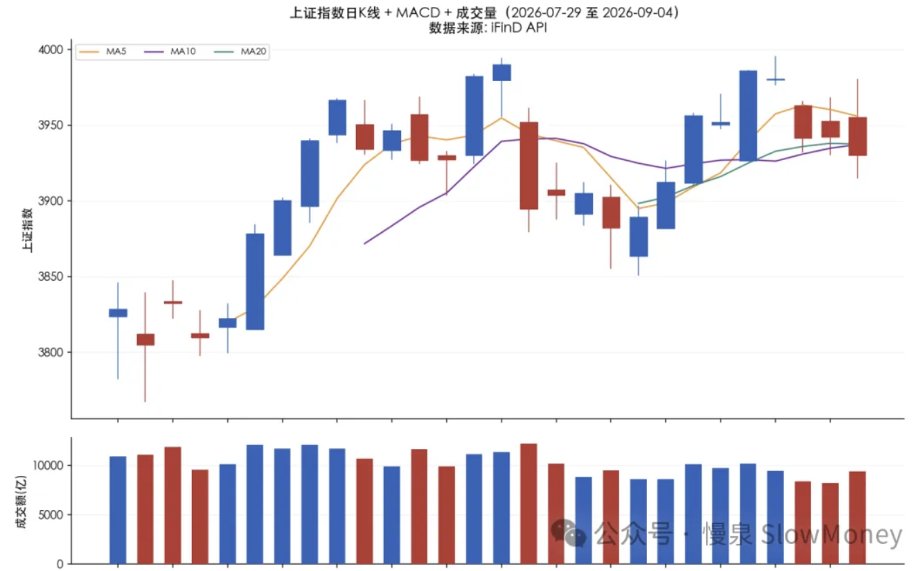

投资备忘20260906-坟头蹦迪类资产
2026-08-31 — 2026-09-06 · W36 · 周度备忘（补档）
本周市场前两个交易日延续上周的突破趋势，4000 点踌躇被人看穿后开始显著调整，大盘连续三个交易日低开低走、高开低走，上周看起来要起来的气势被当头一棒。但是这其中有一类资产持续有资金流入、板块内不断有个股股价创历史新高——2024 年 924 之前也有类似的记忆。这类资产的超额收益不是来自于"自己变好"，而基本逻辑是"其他地方更差"时的避险属性的显性化，统称为坟头蹦迪类资产。
坟头蹦迪类资产
- 在 A 股主要是银行，黄金也有类似的特征：上一波超额收益是从 2024 年 12 月份开始到 2025 年 6 月；最近这波超额收益是从 2026 年 7 月份开始到现在；
- 节奏特征：当市场指数震荡走低时，这类资产超额收益明显；当市场有趋势或者产业驱动时，超额收益会大幅回落。
但是这次跟 2021 年以来的红利资产上涨不一样：2021-2025 年是资产荒和红利资产受追捧的逻辑，当前是避险和资产再平衡的逻辑——成长资产和产业趋势已经出现，只是过于拥挤需要时间和空间调整。
逻辑的变化决定红利资产很难像之前持续出现超额，三个要点会分散资金，形成跟银行资产的竞争：
- "业绩确定性"：相比之前，银行的确定性不比资源品好，弹性甚至更差；
- "低位资产"：更多了——消费、周期制造、地产等都在搔首弄姿，而且部分细分开始变化；
- "产业趋势持续性"：成长类资产经过一段时间和空间的调整，某些公司可能难以回去，但产业趋势会继续，这也会产生新的成长类机会。
当然这次的变化是量化资金"从良"。以前敢跟 GJD 对着干，你买银行我敢持续卖，现在估计模型增加"行业毁灭"因子，就像《黑社会 2》里面的古天乐面对厅长说：
"我也可以爱国。"

本周市场
本周市场走出"冲高回落、缩量阴跌"的节奏。周一上证低开高走冲上 3986 点（周内高点），随后四个交易日连续震荡走低，周五收于 3930 点（周内低点附近），全周净跌 0.56%。核心特征是价值/传媒/银行/养殖等防御顺周期方向占优，而 AI 算力/半导体/光模块/有色/电力设备等成长与周期品种集体杀跌，成交额逐步下降，量能不足制约反弹高度。
结构上呈"价值 > 成长、微盘 > 中大市值"的极致分化。大盘价值（+2.32%）、微盘股（+1.50%）、国证价值（+0.83%）领涨，而成长全线杀跌——中盘成长 -4.18%、小盘成长 -3.70%、国证成长 -3.22%。这是典型的"高低切换/防御占优"行情：资金从高位的 AI 成长、中盘科技撤出，抱团银行/价值/微盘题材，与本周传媒、银行领涨、电子/通信领跌的结构完全吻合。

市场展望：看图看海外
当前的市场处在 7 月低点 3764 和 8/18 高点 3990 的支撑和压制中，成长股的失血和量能萎缩仍然在持续，而且比预计的持续时间长。从成长科技资产的调整幅度来看也在关键的位置，大部分接近 7 月份的低位或者今年起来之前的位置。当前的市场比想象中复杂，短期按照"低位接资产、反弹做假突破"的交易思路实施。
海外宏观更精彩，而且可映射到国内的机会在增加。国内利用工业能力获取全球定价的资产包括电池、逆变器、机械和化工产品，并且这种变化在中报中已经出现明显的反应，需要增加 HALO 资产研究、推演和验证。
市场那么多人关注通胀和就业数据，说明起码这是个正常的经济体。

组合备忘
Beta 组合表现跑赢市场（市场是指中证全 A），Macro 同样。本周市场调整组合同样下跌，同时因为仓位提升较快组合有所承压、灵活性下降。组合仓位上调，主要是港股的核心资产：Beta 策略仓位 90%，主要增加地产和 AI 应用；Macro 策略仓位 80%（其中转债 30%）。组合的表现主要受到以下因素影响：
- HALO 资产微跌，表现好于市场；
- 红利资产表现好于市场：消费类、养殖反弹明显；
- AI 软硬件应用分化：软件上涨，硬件下跌；
- 机器人表现一般：智能驾驶受到特斯拉自动驾驶出租车影响上涨。
| 类别 | 仓位 |
|---|---|
| Beta 策略（主要增加地产和 AI 应用、港股核心资产） | 90% |
| Macro 策略权益仓位（含转债 30%） | 80% |
Beta 跑赢市场 · Macro 同样 · 周度涨幅不再公开播报
操作和思考：本周操作继续提升仓位，当前处在较高的水平。两方面的考量：
- 部分资产被明显错杀：港股的腾讯和地产——龙头地产在政策出台后大幅下跌到今年低点，而中期地产行业的供需错配会类似 2015 年的供给侧改革，民企出清、国企"为人民挣钱"；
- 对大盘的判断仍然是区间震荡：在冲击 4000 之前保持相对高仓位的交易思维，使得组合在 3900 附近相对乐观，等待突破。
下一步：组合在市场低位时或者个股跌幅较大时建立的仓位较为分散，需要集中、调整组合的结构。未来的结构市中需要关注两类资产：国内和海外共振的资源、化工、医药，AI 应用；低位资产的资金再平衡，包括地产、养殖。这是未来的核心持仓。仓位 Beta 不高于 90%，Macro 权益仓位不高于 50%（+ 转债 30%）。组合的结构上需要调整：
- 成长类资产：科技的第一轮弹性交易结束，关注软硬件的应用；
- 机器人智驾：AI 下游应用最直接板块；
- 红利资产：聚焦 3-5 个名字，放弃边缘持仓。筛选标准——股息率合适、营收稳定、海外占比；
- HALO 资产：增加持仓并调整结构。
上期钩子的答案：① 围剿胜利者三阶段——部分验证：明星股（AI 硬件）再跌时，"村民"方向（银行/红利/黄金）持续强势，但结构市确认失败——4000 踌躇被看穿后当头一棒，市场回到区间震荡；② 药明 vs 百济/恒瑞——医药本周未展开，延续观察；③ Beta"不低于 75%"纪律——已大幅突破：加仓至 90%（错杀资产 + 港股核心资产），代价是灵活性下降、组合承压；④ Macro 70%/转债 30%——超额执行：仓位 80%，转债 30% 达成。新钩子：① 坟头蹦迪类资产超额段②的持续性与退出信号（市场趋势/产业驱动出现时超额回落）；② 3764 支撑与 3990 压制的区间震荡、"低位接资产、反弹做假突破"交易思路验证；③ HALO 全球定价资产（电池/逆变器/机械/化工）中报映射的推演落地；④ Macro 权益 80%→50% 的结构调整与红利聚焦 3-5 个名字的执行。对账窗口：2026 年 9 月下旬。